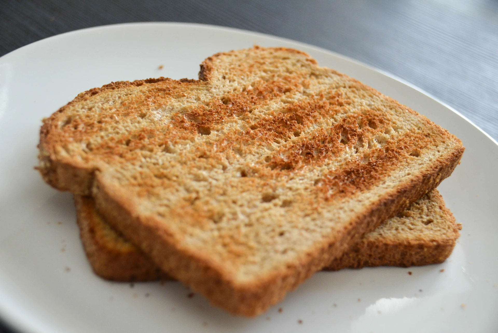

Toast

Description
Today I will teach you how to make one of Meemaw's iconic family recipes, toasted bread. Don't let this dish's apparent simplicity and dryness fool you, beneath the golden brown surface lie such complex flavors as, "bread" and, "warm".
The perfect side to wash down those questionable eggs and leave you feeling okay.
Ingredients
- Frozen heel of bread of unknown age/origin
- Toasting apparatus
- Water
Preparation
- Take frozen heel of bread out of bag and hold against your cheek, changing cheeks and flipping sides every thirty seconds until soft. If bread is warm but will not soften, add water in small quantities until soft.
- With freshly softened bread, administer smell test and ocular assessment to determine the presence of potentially harmful microorganisms. **(if microorganisms are detected, see step 4 addendum)
- Take toasting apperatus from the bathroom and plug it in near where you are cooking
- Set dial on toaster to "Medium" and toast softened bread **(if microorganisms were detected in step 2, set the dial to, "high")
- Remove from toaster and add to plate. Enjoy with water!